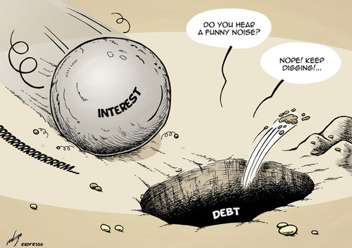
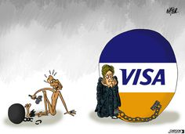
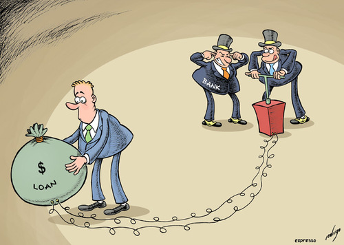

Analyse des dépassements budgétaires
Si vous êtes comme la plupart des gens, vous vivez probablement en dessous de vos capacités de manière à atteindre vos objectifs financiers. Vivre ainsi exige de dépenser moins que vous gagnez et investir vos économies de manière intelligente (À moins que vous planifiez de gagner à la loterie ou de recevoir un bel héritage). Afin de vous mettre dans une position qui vous permettra de commencer à économiser, regarder de plus prêt vos habitudes de dépenses.
Beaucoup de personnes gagnent juste assez pour pouvoir joindre les deux bouts. D’autres ne peuvent même pas se permettre ce luxe ; Elles dépensent plus qu’elles ne gagnent. La cause d’une telle habitude de dépense est bien sûr une accumulation de dettes.
La plupart des influences de la société vous encourage à dépenser. Pensez-y : Le plus souvent, on vous voit comme un consommateur dans les media ou dans les couloirs du gouvernement. On ne vous voit pas en tant que personne, citoyen ou un être humain. Cette section jette un œil sur vos adversaires potentiels du moment que vous essayez de contrôler vos dépenses.
Avoir accès au crédit
Comme vous le savez déjà, c’est facile de dépenser de l’argent. Grâce aux innovations comme les ATMs, les cartes de crédit, PayPal et autres, votre argent est disponible 24/7.
Des fois, on pourrait penser que les préteurs essaient à tout prix de se débarrasser de l’argent de leurs caisses en rendant le crédit très accessible aux gens. Mais cet argent est une dangereuse illusion. Le crédit devient plus périlleux quand vous achetez des biens de consommations que vous ne pourriez pas vous offrir en temps normal. Quand il s’agit des dettes de consommations (Cartes de crédit, les prêts automobiles et autres), les prêteurs semblent ne rien vouloir concéder excepté le malheur de tout mettre par-dessus de votre tête, l’accumulation des charges d’intérêts et le ralentissement de votre progression vers vos objectifs financiers et personnels.

Utilisation abusive de la carte de crédit
La carte de crédit de la banque contemporaine a été inventée par la Bank Of America à la fin du Baby Boom. Depuis, l’industrie du crédit ne fait que boomer avec les boomers.
Si vous payez vos factures de carte de crédit en plein chaque mois, vous bénéficiez automatiquement d'une possibilité de faire des achats sans frais d’intérêts, dette court terme. Mais si vous trimbalez vos dettes de mois en mois avec un taux d’intérêt élevé, vous serez obligé de vivre au-delà de vos capacités. Les cartes de crédit vous facilitent et vous incitent à dépenser de l’argent que vous ne possédez pas.
Vous ne pourrez jamais rembourser votre dette si vous continuez de tout acheter sur votre carte et ne faire que les paiements mensuels minimums. Les intérêts continueront à s’accumuler sur votre dette. Payer uniquement le minimum mensuel peut vous obliger à payer des intérêts élevés sur votre carte pendant des décennies (et pas seulement des mois ou des années)!

Certaines cartes de crédit offrent maintenant à leurs titulaires "une assurance" à un coût de 10% par an, pouvant payer les montants minimums exigibles sur les soldes de cartes de crédit au cas où le débiteur serait incapable de payer suite à un événement majeur de sa vie (comme une perte d’emploi). Une telle carte ne perçoit normalement qu’un taux d'intérêt annuel de 13% sur les soldes de cartes de crédit, de sorte que les frais d’assurance et le taux d'intérêt annuel soient de 23%!
Si vous avez le talent inné de déclencher une tempête et de dépenser plus que vous devriez avec ces petits morceaux de plastique, il n'existe qu'une seule solution : Débarrassez-vous de vos cartes de crédit! Découpez le morceau de plastique aux ciseaux. Allez-y de sang-froid. Vous pouvez fonctionner sans eux.
Céder aux influences et aux programmes externes
Vous sortez avec des amis à dîner, un événement sportif ou un spectacle. Essayez de vous rappeler la dernière fois que l'un de vous a dit: "Allons quelque part (ou faire quelque chose) moins coûteux. Je ne peux pas me permettre à dépenser autant." D'une part, vous ne voulez pas être un bâton dans la roue. Mais d'autre part, certains de vos amis sont plus riches que vous - et ceux qui ne le sont pas, fonctionnent entièrement sur des dettes.
Certaines personnes ont juste assez pour voir le dernier film à succès, porter les derniers vêtements de créateurs, ou obtenir le dispositif d'un smartphone ou d'une tablette récente. Ils ne veulent pas se sentir exclues ou dépassées.
Quelle a été la dernière fois que vous avez entendu quelqu'un dire qu'elle a décidé de renoncer à un achat parce qu'elle doit épargner pour sa retraite ou pour l’achat d'une maison? Cela ne se produit pas souvent, n’est-ce pas? Ne penser qu’au moment présent et oublier vos besoins et vos objectifs à long terme est tentant. Cet état d'esprit conduit les gens à travailler dure pendant de trop nombreuses années dans des emplois qui les déplaisent.
Vivre au jour le jour a ses vertus: Demain n’arrivera pas. Mais les chances sont bonnes qu'il arrive. Voulez-vous continuer à dépenser de la même manière que vous le faisiez hier? Ou vous sentirez-vous coupable d’avoir à nouveau échoué dans la poursuite de vos objectifs?
Vos habitudes de dépenses devraient être influencées par vos désirs et vos plans, non par ceux des autres. Si vous ne vous êtes pas encore fixé d’objectifs, vous ne pouvez pas savoir combien vous devriez économiser.
Dépenser pour se sentir bien
La vie est pleine de stresse, d'obligations et d'exigences. " Je travaille dur, " vous vous dites, "et je mérite de me gâter !" Surtout après que votre patron ait récolté les mérites de votre dernière grande idée, ou qu’il vous ait blâmé pour sa dernière bourde. Donc, vous vous achetez quelque chose de chère, ou allez dîner dans un restaurant chic pour vous sentir mieux.
Vous sentez vous mieux? Si oui, vous ne le serez pas lorsque la facture arrivera. Et plus vous dépensez, moins vous épargnez, plus vous serez obligé de travailler pour des gens comme votre patron !
Tout comme les gens peuvent devenir dépendants à l’alcool, le tabac, la télévision ou l’internet, certaines personnes deviennent accros à la sensation forte qu'ils obtiennent en dépensant. Les chercheurs peuvent identifier un certain nombre de raisons psychologiques à la dépendance aux dépenses et une certaine relation avec la façon dont vos parents manipulent l'argent et les dépenses. (Et vous qui pensiez avoir identifié tous les problèmes pour lesquels vous pouviez blâmer maman et papa !)
Contracter des prêts véhicules
Se rendre chez un concessionnaire de voitures et rentrer à la maison avec une nouvelle voiture que vous pourriez ne jamais vous permettre si vous deviez payer comptant est facile. Le vendeur vous fait réfléchir en termes de paiements mensuels qui sonnent faibles par rapport à ce que ces quatre-roues vont vraiment vous coûter. Les prêts véhicules sont accessibles à presque tout le monde.
Supposons que vous êtes fatigué de conduire votre vieille bagnole. La voiture a pris du mileage, elle devient ennuyeuse en plus que vous n’aimez pas être vu au volant de cette dernière. Selon vos calculs, la voiture aura besoin d’une bonne réparation dans les mois à venir. Donc, vous vous rendez chez votre revendeur local de voiture sympathique.
Vous commencez à regarder toutes les belles voitures autour de vous, et ensuite – vous vous sentez comme quand vous repérez une fontaine d'eau durant une journée torride - ça y est : votre nouvelle voiture. Elle est élégante et propre, dispose de la climatisation, d'une chaîne stéréo sans parler de sa grande puissance. Avant que vous puissiez lire les petits caractères sur la page d’autocollant qui se trouve sur la vitre latérale, le vendeur se glisse de manière détendue à côté de vous. Il se met à vous parler de la beauté de la voiture, de la météo, ou de quoi que ce soit sauf du prix de cette dernière.
" Comment ", vous vous dites, " ce gars peut-il se mettre à me parler sans savoir si je peux me permettre une telle chose? " Après un essai routier, des infos supplémentaires sur la voiture, du temps qu’il fait, et de votre vie amoureuse (ou de votre absence de vie amoureuse) arrive le moment de vérité. Le vendeur, paraît-il, ne se soucie pas de savoir combien d'argent vous avez. Que vous avez beaucoup d'argent ou très peu n'a pas d’importance. La voiture est à seulement HTG 18,000.00 par mois!
" Ce prix n’est pas mal" vous vous dites. Vous vous attendiez à ce que la voiture vous coûte au moins 25 fois plus chère. Avant même de vous rendre compte, le revendeur examine votre historique de crédit puis vous fait signer quelques papiers, et quelques minutes plus tard, vous rentrez à la maison au volant de votre nouvelle voiture.
Le concessionnaire souhaite que vous pensiez en termes de paiements mensuels parce que le coût ne semble pas tellement cher : HTG 18,000.00 pour une voiture. Mais, bien sûr, que ce HTG 18,000.00 par mois pour de nombreux mois à venir. Vous allez devoir payer ce montant pour toujours - après tout, vous venez d'acheter une voiture qui va coûter un énorme morceau de votre revenu net annuel.

Mais il y a pire. Que devient le prix total de la voiture lorsque les frais d'intérêt y sont ajoutés? (Même si les frais d'intérêt sont bas, vous pouvez être entrain d’acheter une voiture que vous ne pouvez pas payer en réalité.) Et que dire du coût de l’assurance, l’enregistrement et l'entretien au cours des sept années ou plus que vous serez propriétaire de la voiture? Actuellement, elle coute probablement plus que ce que vous gagnez en une année. Aie!
Analyse de vos dépenses
Se brosser les dents, avoir une alimentation diversifiée, y compris beaucoup de fruits et de légumes, et de l'exercice régulièrement sont de bonnes habitudes. Dépenser moins que vous gagnez et épargner suffisamment pour répondre à vos objectifs financiers futurs sont les équivalents financiers de ces habitudes.
Malgré des revenus relativement élevés par rapport au reste du monde, certains personnes économisent difficilement une partie significative de leurs revenus. Pourquoi? Parce que très souvent, ils dépensent trop - parfois beaucoup plus que nécessaire
La première étape pour épargner plus du revenu pour lequel vous travaillez si dur est de savoir où ce revenu est généralement dépensé. Faites l'analyse de vos dépenses si l'une des situations suivantes se présentent :
- Vous n'économisez pas assez d'argent pour répondre à vos objectifs financiers.
- Vous sentez comme si vos dépenses sont hors de contrôle, ou vous ne savez pas vraiment où vont tous vos revenus.
- Vous anticipez un changement de vie importante (par exemple, mariage, de quitter votre emploi pour démarrer une entreprise, avoir des enfants, retraite, etc.)
Si vous êtes déjà un bon épargneur, vous n’avez pas besoin de compléter l'analyse des dépenses. Après avoir mis assez de côté pour atteindre vos objectifs, je ne vois pas trop l’intérêt de suivre sans cesse vos dépenses. Vous avez déjà établi la bonne habitude - épargner.
L'objectif immédiat d'une analyse des dépenses est de comprendre où va généralement votre argent. L'objectif à long terme est d'établir une bonne habitude: le maintien d'une routine d'épargne régulier, automatique.
Remarquez les quatre premières lettres du mot analyse. (Vous n’avez peut-être jamais remarqué ce qu'ils énoncent, mais je sens la nécessité de le porter à votre attention.) Savoir où va votre argent chaque mois est utile, et apporter des changements dans vos habitudes de dépense et de éliminer les dépenses inutiles de sorte que vous puissiez économiser plus d'argent et atteindre vos objectifs financiers est formidable. Cependant, vous pouvez devenir malheureux ainsi que ceux qui vous entourent si vous êtes trop préoccupé à documenter la trace de chaque gourde et de chaque centime que vous dépensez.
Epargner ce dont vous avez besoin pour atteindre vos objectifs est ce qui importe le plus.
Le suivi des dépenses de la façon low-tech
Analyser vos dépenses est un peu comme être un détectif. Votre but est de reconstituer le crime de dépense. Vous avez probablement quelques grands indices à portée de main, ou quelque part sur votre bureau, ou l'ordinateur où vous gérez vos finances.
Sauf si vous gardez des registres méticuleux qui détaillent chaque gourde que vous dépensez, vous ne trouverez pas d'information pertinente. Ne vous inquiétez pas! Un certain nombre de sources peut vous permettre d'avoir les details de vos dépenses. Pour commencer, accédez à vos :
- Souches de paie récents (Chéquier)
- Déclarations de revenus
- La banque en ligne
- Enregistrement des chèques payés et les transactions mensuelles de cartes de débit
- Crédit et paiement des factures de carte
Idéalement, vous voulez rassembler les documents nécessaires pour suivre 12 mois de dépenses. Mais si vos habitudes de dépenses ne fluctuent pas beaucoup de mois en mois (ou si votre chien a mangé quelques-unes des vieilles factures), vous pouvez réduire votre collecte de données pour une période de six mois, ou tous les deux ou trois mois pour l’année passée. Si vous prenez de grandes vacances ou vous dépensez de gros montants en dons durant certains mois de l’année, assurez-vous d’inclure ces mois dans votre analyse. Également votre compte d'assurance ou d’autres paiements financiers que vous pouvez choisir de ne pas payer mensuellement mais que vous payez trimestriellement, semestriellement ou annuellement.
Les achats effectués en espèces sont les plus difficiles à pister car ils ne laissent pas de trace papier. Au cours d'une semaine ou peut-être même d’un mois, vous pouvez garder une trace de tout ce que vous achetez avec de l’argent. Pister les achats en espèces peut être un exercice instructif, mais il peut aussi être un problème. Si vous êtes aussi paresseux que moi ou que vous manquez de temps et de patience, essayez de faire une estimation de ces dépenses. Pensez à une semaine ou un mois typique - combien de fois avez-vous achetez des choses avec de l'argent en espèces? Par exemple, si vous prenez le petit déjeuner sur quatre jours par semaine et payez environ HTG 200 par repas, qui est d'environ HTG 3,000.00 par mois. Vous pouvez également essayer d’additionner tous les retraits en espèces de votre relevé de compte et ensuite remonter dans le temps pour essayer de vous souvenir où vous dépensez votre argent.
Séparez vos dépenses en autant de catégories utiles et détaillées que possible. Le tableau suivant vous donne un format standard ; vous pouvez l’adapter à vos besoins. Rappelez-vous, si vous attribuez la plupart des montants à des catégories dénuées de sens comme «Autre», vous finirez là où vous avez commencé – Et vous vous demanderez où tout l'argent est allé.
Pistage de vos dépenses sur les sites "libres" et votre PC
Les programmes et les sites Web logiciels peuvent vous aider à payer les factures et à suivre vos dépenses. Le principal avantage de l'utilisation de logiciels ou de sites Web est que vous pouvez toujours suivre vos dépenses aussi longtemps que vous gardez l’habitude de saisir les informations. Les options de logiciels et applications web peuvent même vous aider à accélérer le processus de pistage des dépenses (après que vous les ayez maitrisés, ce qui n’est pas toujours une chose facile à faire).
Mais vous n'avez pas besoin d'un ordinateur et des logiciels de fantaisie pour payer vos factures et savoir où vous dépensez de l'argent. Beaucoup de gens que je connais interrompent la saisie des données, après quelques mois. Si vous voulez suivre vos dépenses, vous devez saisir les informations des factures que vous payez par chèque et les frais que vous payez par carte de crédit et en cash. Comme les équipements d'exercice à domicile et les appareils de cuisine exotiques, de tels logiciels se terminent souvent dans le cimetière des consommateurs.
Papier, crayon, et une calculatrice est tout ce qu’il vous faut pour bien suivre vos dépenses. Pour ceux d'entre vous qui veulent essayer d'informatiser les paiements de leurs factures et le pistage de leurs dépenses, je vous recommande les meilleurs logiciels et sites Web au chapitre 19.
 ACE's Finance
ACE's Finance